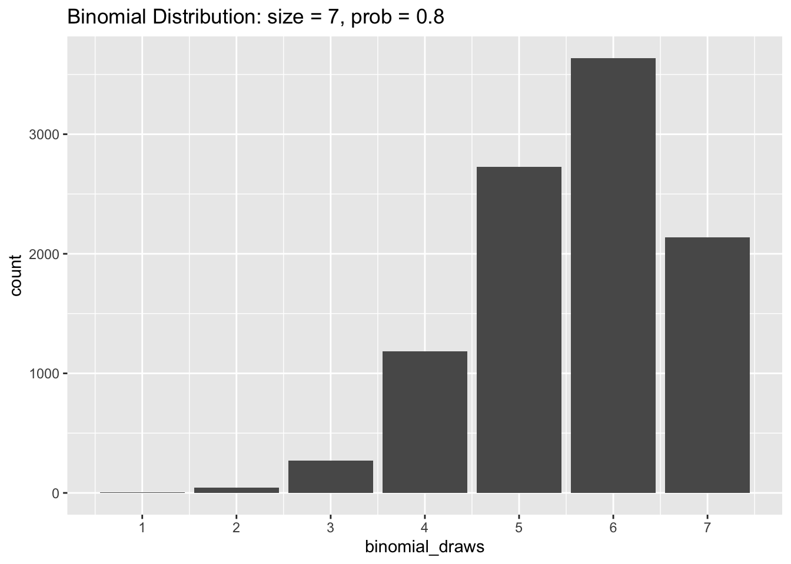
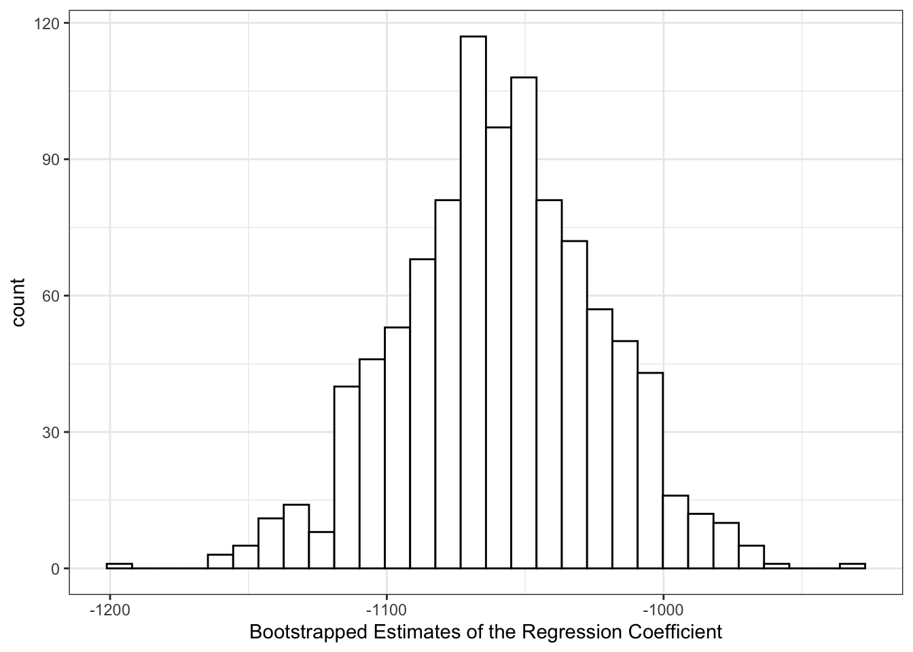
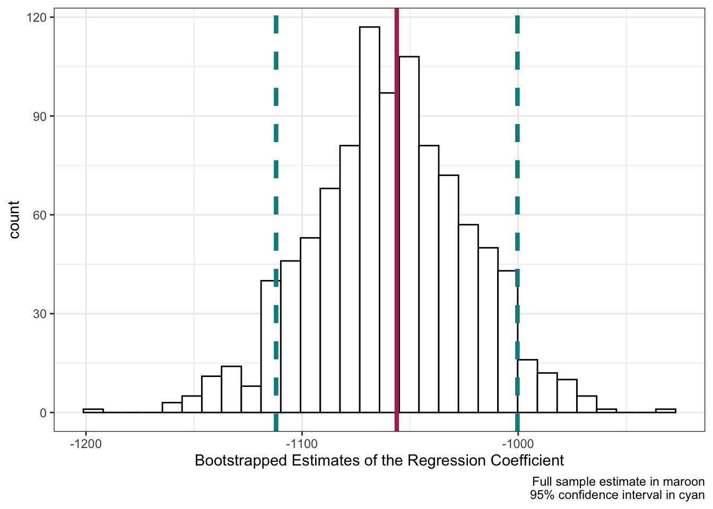

4 Loops and Simulation
Thus far in the course we have been working with real data. These data sets contained variables which correspond to tangible phenomena out in the world. While the bulk of social science research uses data of this sort, generating fake data can be surprisingly useful. Fake, or synthetic, data allows us to control every aspect of the data generating process (DGP). By manually tweaking different parameters that govern the DGP, we can better understand how our statistical methods will perform on real data. In this chapter we will learn some of the tools in R to simulate fake data.
4.1 Generating Fake Data
First let’s load in our favorite packages.
4.1.1 sample()
The simplest way to generate random data in R is through the function samples(). The primary inputs to sample() are x, which is the set of values you want to draw from and size, which is the number of samples you want to draw. Let’s takes a look at an example.
# Create a vector of character values
my_animals <- c("cat", "dog", "fish", "monkey", "parrot")
# From the set "my_animals", draw 2 at random
sample(x = my_animals, size = 2)[1] "cat" "monkey"By default, sample() samples without replacement. This means that once a value from x is drawn, it will be ineligible to be drawn again. The following code gives us an error because size = 100 is larger than the total number of values in my_animals.
sample(x = my_animals, size = 100)Error in sample.int(length(x), size, replace, prob): cannot take a sample larger than the population when 'replace = FALSE'To fix this we need to sample with replacement by setting replace = TRUE inside sample().
sample(x = my_animals, size = 100, replace = TRUE) [1] "monkey" "dog" "parrot" "parrot" "parrot" "fish" "fish" "dog"
[9] "cat" "cat" "fish" "parrot" "dog" "fish" "parrot" "monkey"
[17] "parrot" "parrot" "fish" "parrot" "monkey" "monkey" "fish" "monkey"
[25] "dog" "fish" "cat" "fish" "cat" "fish" "cat" "monkey"
[33] "parrot" "dog" "fish" "dog" "cat" "fish" "dog" "parrot"
[41] "monkey" "monkey" "fish" "cat" "fish" "dog" "parrot" "fish"
[49] "monkey" "parrot" "monkey" "fish" "parrot" "dog" "parrot" "dog"
[57] "cat" "cat" "parrot" "dog" "monkey" "monkey" "parrot" "dog"
[65] "cat" "dog" "fish" "monkey" "monkey" "monkey" "dog" "parrot"
[73] "dog" "monkey" "monkey" "monkey" "cat" "parrot" "monkey" "parrot"
[81] "fish" "parrot" "monkey" "dog" "fish" "fish" "cat" "parrot"
[89] "dog" "monkey" "parrot" "cat" "cat" "parrot" "fish" "parrot"
[97] "parrot" "dog" "cat" "parrot"The decision to sample with, or without, replacement depends on the particular DGP you want to simulate.
The sample() function has one last option which may be useful when generating random values. If you give prob a vector of values, sample() will draw samples from x in proportion to the values in prob. Each value in prob corresponds to the values in x that shares its position in the vector.
The code above samples my_animals with 10% weight on cat, 20% weight on dog and fish, 40% weight on monkey, and 10% weight on parrot. We can confirm this worked by inspecting a bar graph of our my_animals data.
4.1.2 Sampling from Data
While we’re discussing sampling to create fake data, it’s also handy to know how to sample from real data. Sometimes you will be working with data sets that are so large that you’ll want to test your code on smaller portions first. Or you may want to perform sampling on data when creating bootstrapped confidence intervals (a topic we will return to at the end of this chapter).
Let’s read in the “county_elections.csv” data once again.
Rows: 3114 Columns: 27
── Column specification ────────────────────────────────────────────────────────
Delimiter: ","
chr (2): state_abbrv, county
dbl (25): countyCode, trump16, clinton16, otherpres16, romney12, obama12, ot...
ℹ Use `spec()` to retrieve the full column specification for this data.
ℹ Specify the column types or set `show_col_types = FALSE` to quiet this message.Dplyr contains a function called sample_n() which lets you easily draw a number of random rows from your data.
county_elections |>
sample_n(size = 10)# A tibble: 10 × 27
state_abbrv county count…¹ trump16 clint…² other…³ romne…⁴ obama12 other…⁵
<chr> <chr> <dbl> <dbl> <dbl> <dbl> <dbl> <dbl> <dbl>
1 TN Benton 47005 4716 1474 138 3850 2258 118
2 ID Jefferson 16051 8436 976 2063 9895 1303 183
3 AZ Gila 4007 14182 7003 15512 13455 7697 376
4 KS Rooks 20163 2031 275 113 2038 361 61
5 MS DeSoto 28033 43089 20591 2015 43559 21575 660
6 IL De Witt 17039 5077 1910 556 4579 2601 165
7 VA Loudoun 51107 69949 100795 12353 75292 82479 2289
8 MT Broadwat… 30007 2348 573 212 2152 764 95
9 IL Calhoun 17013 1721 739 111 1440 1080 56
10 MS Clay 28025 4150 5722 131 4291 6712 69
# … with 18 more variables: total_population <dbl>, cvap <dbl>,
# white_pct <dbl>, black_pct <dbl>, hispanic_pct <dbl>, nonwhite_pct <dbl>,
# foreignborn_pct <dbl>, female_pct <dbl>, age29andunder_pct <dbl>,
# age65andolder_pct <dbl>, median_hh_inc <dbl>, clf_unemploy_pct <dbl>,
# lesshs_pct <dbl>, lesscollege_pct <dbl>, lesshs_whites_pct <dbl>,
# lesscollege_whites_pct <dbl>, rural_pct <dbl>, ruralurban_cc <dbl>, and
# abbreviated variable names ¹countyCode, ²clinton16, ³otherpres16, …
# ℹ Use `colnames()` to see all variable namesAlternatively, we can use sample_frac() to specify how many random rows to draw based on a proportion of total rows.
county_elections |>
sample_frac(size = 0.01) # Return 1% of the final data# A tibble: 31 × 27
state_abbrv county count…¹ trump16 clint…² other…³ romne…⁴ obama12 other…⁵
<chr> <chr> <dbl> <dbl> <dbl> <dbl> <dbl> <dbl> <dbl>
1 IN Lawrence 18093 14035 4210 907 11622 5779 421
2 WY Hot Spri… 56017 1939 400 247 1895 523 97
3 SC Greenwood 45047 16961 10711 1091 16348 11972 352
4 SC Lancaster 45057 23719 13812 1407 19333 13419 392
5 NC Tyrrell 37177 975 720 44 930 837 16
6 NC Robeson 37155 20762 19016 1080 17510 24988 448
7 IN Posey 18129 8404 3521 542 7430 4533 263
8 OH Ross 39141 18652 10356 1372 15008 14569 506
9 NE Kearney 31099 2531 550 215 2349 773 58
10 CT Middlesex 9007 38867 45357 4400 34591 47855 1092
# … with 21 more rows, 18 more variables: total_population <dbl>, cvap <dbl>,
# white_pct <dbl>, black_pct <dbl>, hispanic_pct <dbl>, nonwhite_pct <dbl>,
# foreignborn_pct <dbl>, female_pct <dbl>, age29andunder_pct <dbl>,
# age65andolder_pct <dbl>, median_hh_inc <dbl>, clf_unemploy_pct <dbl>,
# lesshs_pct <dbl>, lesscollege_pct <dbl>, lesshs_whites_pct <dbl>,
# lesscollege_whites_pct <dbl>, rural_pct <dbl>, ruralurban_cc <dbl>, and
# abbreviated variable names ¹countyCode, ²clinton16, ³otherpres16, …
# ℹ Use `print(n = ...)` to see more rows, and `colnames()` to see all variable namesPerforming stratified sampling is very easy using the group_by() function we introduced in the last chapter. The code below draws one random row (i.e. county) from each US state.
# A tibble: 50 × 27
# Groups: state_abbrv [50]
state_abbrv county count…¹ trump16 clint…² other…³ romne…⁴ obama12 other…⁵
<chr> <chr> <dbl> <dbl> <dbl> <dbl> <dbl> <dbl> <dbl>
1 AL Madison 1089 89520 62822 11047 90884 62015 2160
2 AR White 5145 21077 5170 972 20011 5765 738
3 AZ Yuma 4027 25165 24605 3240 23352 18059 542
4 CA Mariposa 6043 5185 3122 570 5140 3498 362
5 CO Pueblo 8101 36265 35875 6506 31894 42551 1749
6 CT Middlesex 9007 38867 45357 4400 34591 47855 1092
7 DC District… 11001 12723 282830 15715 21381 267070 5313
8 DE New Cast… 10003 85525 162919 13947 81230 167082 3700
9 FL Okaloosa 12091 71893 23780 5182 70168 23421 1209
10 GA Jefferson 13163 3063 3821 84 2999 4261 38
# … with 40 more rows, 18 more variables: total_population <dbl>, cvap <dbl>,
# white_pct <dbl>, black_pct <dbl>, hispanic_pct <dbl>, nonwhite_pct <dbl>,
# foreignborn_pct <dbl>, female_pct <dbl>, age29andunder_pct <dbl>,
# age65andolder_pct <dbl>, median_hh_inc <dbl>, clf_unemploy_pct <dbl>,
# lesshs_pct <dbl>, lesscollege_pct <dbl>, lesshs_whites_pct <dbl>,
# lesscollege_whites_pct <dbl>, rural_pct <dbl>, ruralurban_cc <dbl>, and
# abbreviated variable names ¹countyCode, ²clinton16, ³otherpres16, …
# ℹ Use `print(n = ...)` to see more rows, and `colnames()` to see all variable names4.1.3 Sampling from Distributions
The sample() function is great for generating random data, but its use is limited by the fact that you have to manually specify the set of values x to draw from. For many common distributions of data (for example the Normal distribution), the set of possible values can range from negative infinity to positive infinity! To help us with this problem, base R comes with dozens of functions for drawing samples from well-known statistical distributions. The first one we will take a look at is rbinom() (r for “random” and binom for “binomial”).
4.1.3.1 Binomial Distribution
The rbinom() function takes three inputs: n for the number of draws we want, size for the number of binomial trails, and prob for the probability of a “success”. Don’t worry if some of these parameters are unfamiliar, we will cover the binomial distribution in much greater detail in the Probability section of the course. The easiest introduction to the binomial distribution is to set size = 1 and prob = 0.5. This simulates flipping a coin and getting either a heads, 1, or tails, 0 with equal probability. The code below generates 100 coin flips in this way.
rbinom(n = 100, size = 1, prob = 0.5) [1] 1 1 1 0 1 0 0 0 0 1 1 1 1 0 1 0 0 1 1 1 1 0 0 0 0 0 1 1 1 1 1 0 0 0 1 0 0
[38] 1 0 0 0 0 1 1 1 0 0 1 0 0 1 1 1 1 1 0 0 0 1 1 0 1 0 0 0 1 1 0 1 1 0 1 0 1
[75] 1 1 0 0 1 1 0 1 0 0 1 1 1 1 1 1 1 0 0 1 0 1 1 0 1 1We can replicate the same data generating process using sample() with the following code.
[1] 1 0 1 0 1 1 1 1 0 0 1 1 1 1 1 0 0 1 0 0 0 0 1 1 1 0 1 0 1 0 1 1 0 1 1 0 0
[38] 1 0 1 0 1 1 0 1 1 0 1 0 0 0 1 1 0 1 0 0 1 1 1 0 0 1 0 0 0 1 0 0 0 1 0 0 1
[75] 0 0 0 0 0 0 0 1 1 1 0 0 0 1 1 0 0 1 1 1 0 1 0 0 0 1Let’s tweak the value for prob and see what happens.
rbinom(n = 100, size = 1, prob = 0.8) [1] 0 1 1 1 1 1 1 1 1 0 1 1 1 1 0 1 0 1 1 1 0 0 1 1 1 1 0 1 1 1 0 1 1 1 1 0 1
[38] 1 1 1 0 1 1 1 1 1 1 1 1 0 1 1 0 1 1 1 1 1 0 1 1 0 1 1 1 1 1 1 1 1 1 1 0 1
[75] 0 1 1 1 1 1 1 1 1 1 1 1 1 1 1 1 1 1 1 0 0 0 1 1 1 1Now there are way more 1’s than 0’s! A bar graph can help us visualize the proportions.
binomial_draws <- rbinom(n = 100, size = 1, prob = 0.8)
tibble(binomial_draws) |>
ggplot(aes(x = binomial_draws)) +
geom_bar() +
scale_x_continuous(breaks = 0:1) +
labs(title = "Binomial Distribution: size = 1, prob = 0.8")
Differentiating size from n in rbinom() can be difficult to understand at first, so let’s experiment with the code to help figure it out. When we set n = 100 and size = 1 we were drawing 100 values from a trial that only ran once. Instead, if we reverse these numbers, we would be drawing a single value from 100 trials.
rbinom(n = 1, size = 100, prob = 0.5)[1] 53As you can see, the code above gives us a single value which is the sum of 1’s from 100 trials. Because prob = 0.5, this number should be around 50.
Like in our example of sampling animal names with sample(), it can be useful to create histograms to understand how sampling parameters affect the distribution of draws we get.
binomial_draws <- rbinom(n = 10000,
size = 7,
prob = 0.5)The code chunk above creates an object called binomial_draws which holds 10,000 draws from a binomial distribution with seven trials and where the probability of a successful trial is 0.5. Let’s plot the values of binomial_draws.
tibble(binomial_draws) |>
ggplot(aes(x = binomial_draws)) +
geom_bar() +
scale_x_continuous(breaks = 0:7) +
labs(title = "Binomial Distribution: size = 7, prob = 0.5")
As you can see, the results of our random draws cluster around 3 and 4. This is because the expected value of a binomial distribution is the total number of trials multiplied by the probability of a success. So that would be 7 * 0.5 = 3.5 in this example.
Now let’s try changing prob to equal 0.8 in our simulation. The histogram below shows that the values of binomial_draws are clustered towards the higher end of the distribution with an average value of 7 * 0.8 = 5.6.
4.1.3.2 The Uniform Distribution
Whereas the binomial distribution only returns whole numbers when we sample from it, samples drawn from a uniform distribution can be any real number between a specified minimum and maximum. The uniform distribution is useful when you want to generate random numbers with equal weight from within a pre-determined range. To generate random samples from the uniform distribution we use runif(). Like rbinom(), the option n sets the number of random draws we want. We also need to specify our range by including a max and min.
# Generating random numbers from between 0 and 1
runif(n = 25, min = 0, max = 1) [1] 0.2666804777 0.6234055371 0.9765510461 0.1822242700 0.2648395563
[6] 0.5189225939 0.0009186019 0.9941151615 0.2401003670 0.6255205856
[11] 0.9751501842 0.9335779757 0.2265173141 0.9315182385 0.3863388284
[16] 0.9332316979 0.7531679228 0.8287287545 0.5984475380 0.4331733498
[21] 0.4586147259 0.9775261404 0.9057540754 0.6500653985 0.4549211264Let’s graph the random draws we get from a uniform distribution to better understand what’s taking place.
uniform_draws <- runif(10000, min = 0, max = 1)
tibble(uniform_draws) |>
ggplot(aes(x = uniform_draws)) +
geom_histogram(color = "white", bins = 30) +
xlim(-0.5, 1.5) +
labs(title = "Unfiform Distribution: min = 0, max = 1")Warning: Removed 2 rows containing missing values (geom_bar).The histogram above shows that values between 0 and 1 are all about equally likely, but we won’t get any draws that are less than 0 or greater than 1.
4.1.3.3 The Normal Distribution
The normal distribution creates that familiar bell-shaped curve and has two parameters: the mean which controls the center of the distribution, and the standard deviation which controls the width of the curve. We often model variables as following a normal distribution when we believe they should be drawn from some central value plus or minus some random “noise”. Normal distributions arise naturally when the data-generating process involves the addition of many small fluctuations in some process.
The function for generating samples from a normal distribution, rnorm(), follows the same pattern we have seen with rbinom() and ruinf(). First we specify how many samples we want to draw n, then we specify the parameters mean and sd of the normal distribution we want to draw from.
rnorm(n = 100, mean = 0, sd = 1) [1] 1.07193439 0.90959901 0.63438336 -1.81991663 -0.97061802 -0.90041496
[7] 0.66110800 -2.08052863 0.58372987 -0.69962007 1.38364978 0.41307318
[13] 0.31384037 -0.51796373 -0.69949798 0.15562732 -0.69813207 0.45940200
[19] 0.80561063 0.44693224 -0.67473407 0.05076087 1.56232276 1.33219087
[25] -0.63888991 -0.51304849 0.23620458 0.53625810 0.33626208 0.45946603
[31] 0.54750270 -0.29768217 1.40150974 -0.50131425 1.18253456 -0.40755411
[37] 0.26372925 0.14921023 0.34818202 1.31079391 1.53751339 0.54558217
[43] -1.06030677 2.77397696 -2.16921403 -0.69488376 -0.99688257 -0.82424142
[49] -1.09127657 0.43191217 1.62819129 1.08325329 0.07717599 -1.42854974
[55] 1.26476265 0.12619905 -0.99798481 0.18665073 -0.58242430 1.34347709
[61] 0.46362528 -0.18211372 0.32311486 0.83728356 1.44363695 -1.82580380
[67] -0.15997980 0.52929258 0.95148272 0.92031013 0.82053319 -0.93608666
[73] 1.83931547 1.24132344 0.31752408 0.13726839 -1.21513296 -1.41798153
[79] 0.91425021 1.08455480 -0.97635569 0.26294098 0.53753106 2.54350747
[85] -0.23195963 0.32785171 0.50881987 -0.59218392 -0.71211126 -0.62746026
[91] 0.48632901 1.05705353 0.58617841 0.87261325 2.00004374 0.13288381
[97] 1.20801594 1.00008730 1.29300448 1.17217420Like the uniform distribution, draws from the normal distribution can be any real number. It may be difficult to see from the random draws above that values close to the mean of 0 are more likely than more extreme values. So let’s take a look at the distribution graphically.
normal_draws <- rnorm(10000, mean = 0, sd = 1)
tibble(normal_draws) |>
ggplot(aes(x = normal_draws)) +
geom_histogram(color = "white", bins = 30) +
labs(title = "Normal Distribution: mean = 0, sd = 1")
A normal distribution that looks like the one above (mean = 0, standard deviation = 1) is often called a “Standard Normal” distribution, and you will come across it all the time in statistics. Let’s take a look at some other normal distributions by varying their mean and standard deviation values.
# rnorm defaults to mean = 0, sd = 1 if those options are left blank
normal_minus_one <- rnorm(10000, mean = -1)
normal_zero <- rnorm(10000)
normal_one <- rnorm(10000, mean = 1)
# Combining the draws into a single "long" data frame
normal_data <- cbind(normal_minus_one,
normal_zero,
normal_one) |>
as_tibble() |>
pivot_longer(cols = everything(),
names_to = "distribution",
values_to = "normal_draws")
normal_data |>
ggplot(aes(x = normal_draws)) +
geom_histogram(color = "white", bins = 90) +
facet_wrap(~ distribution, nrow = 3)
Changing the value for mean shifts the distribution along the x-axis but the spread of the data remains the same.
normal_narrow <- rnorm(10000, sd = 0.5)
normal_standard <- rnorm(10000)
normal_wide <- rnorm(10000, sd = 1.5)
normal_data <- cbind(normal_narrow,
normal_standard,
normal_wide) |>
as_tibble() |>
pivot_longer(cols = everything(),
names_to = "distribution",
values_to = "normal_draws")
normal_data |>
ggplot(aes(x = normal_draws)) +
geom_histogram(color = "white", bins = 90) +
facet_wrap(~ distribution, nrow = 3)
Changing the value for only sd keeps each distribution centered at 0, but makes the data more or less spread out.
4.1.4 set.seed()
If you have been running the code chunks above yourself, you may have noticed that random values you got differed from those printed in this chapter. In fact, each time you run a function like rnorm(n = 100, mean = 0, sd = 1) you will get different results. The function set.seed() is R’s way of making sure that the results of your random simulations are the same for others, and for yourself if you re-run your code. This is an important part of making sure the results of your statistical analyses are reproducible.
Simply put any number inside set.seed() and R’s randomness will become tied to that particular number.
Running the chunk of code above should output "parrot" "cat" "monkey" each time it is run and across different computers, or different versions of R.
4.2 Loops
Loops are handy tools for running the same process repeatedly in R. For example, let’s say we wanted to print out the name of every animal in our vector of my_animals. The tedious way would be to type out the print() function for each animal as in the code below.
print("cat")[1] "cat"print("dog")[1] "dog"print("monkey")[1] "monkey"print("parrot")[1] "parrot"print("fish")[1] "fish"But with loops we can perform the same task in a much more concise fashion.
my_animals <- c("cat", "dog", "monkey", "parrot", "fish")
for (animal in my_animals) {
print(animal)
}[1] "cat"
[1] "dog"
[1] "monkey"
[1] "parrot"
[1] "fish"The basic structure of a loop is shown in the code chunk below. The object set_of_things should be some object in R which holds many values (such as a vector, a data frame, a list, or a matrix). The thing object refers to each element in set_of_things and changes its value each time the loop goes through a single iteration. Typically you will refer to thing in the body of your loop, such as in the function do_something_to(). A loop structured like this runs until every element in set_of_things is iterated through.
for (thing in set_of_things) {
do_something_to(thing)
}It is very common to use loops as a way to run a set of R commands N times, where N is some integer greater than 1. The easiest way to do this is to create a sequence of numbers using : as shown below.
1:10 [1] 1 2 3 4 5 6 7 8 9 10The object 1:10 is then what we will insert into the set_of_things position in our loop in order to iterate through each number in the sequence. When you construct a loop in this manner you should name your thing object i. This is the standard style taken from mathematical indexing, and helps readers of your code better understand the purpose of your loop.
for (i in 1:10) {
i <- i ^ 2
print(i)
}[1] 1
[1] 4
[1] 9
[1] 16
[1] 25
[1] 36
[1] 49
[1] 64
[1] 81
[1] 100So far our loops have only printed out their results in the console, but have not given us much to work with afterwards. To save the output of your loop you will typically need to initialize some “holder” object ahead of running the loop. Then, within each iteration of the loop, you can save the result inside the “holder” object.
holder <- NULL # Use NULL to create an empty object
for (i in 1:100) {
holder[i] <- i ^ 2
}The code chunk above iterates through each number from 1 to 100, squares that number, then saves it in the ith position of the holder object. We can then take the vector of values stored in holder and access them as we would any object saved in our R Environment.
holder [1] 1 4 9 16 25 36 49 64 81 100 121 144
[13] 169 196 225 256 289 324 361 400 441 484 529 576
[25] 625 676 729 784 841 900 961 1024 1089 1156 1225 1296
[37] 1369 1444 1521 1600 1681 1764 1849 1936 2025 2116 2209 2304
[49] 2401 2500 2601 2704 2809 2916 3025 3136 3249 3364 3481 3600
[61] 3721 3844 3969 4096 4225 4356 4489 4624 4761 4900 5041 5184
[73] 5329 5476 5625 5776 5929 6084 6241 6400 6561 6724 6889 7056
[85] 7225 7396 7569 7744 7921 8100 8281 8464 8649 8836 9025 9216
[97] 9409 9604 9801 10000Alternatively, we could write the functionally-equivalent code chunk below.
holder <- NULL
for (i in 1:100) {
holder <- c(holder, i ^ 2)
}Here we are using the c() function to combine the current value of the loop’s iteration with everything that came before it in the holder object. This method is more flexible than indexing with [i], but can be computationally slower to run because the holder object is re-writen by R each time the loop iterates.
4.3 Simulations
In the final section of this chapter we will look at a few examples of simulations that have real-world applications. The basic idea behind each of these simulations is to use R’s random sampling functions (such as rnorm() or runif()) within a loop to generate hundreds or thousands of synthetic data points. In the real world we only get one realization of our data to analyze, but common statistical techniques are based on imagining large numbers of repeated samples of data from the same population. Simulations built in R can therefore help us approximate this process.
4.3.1 Central Limit Theorem
The Central Limit Theorem (CLT) is invoked all the time in frequentist statistical methods. In lay terms, it states that if we calculate the means of many samples from a single population, the distribution of these means will be normally distributed. And this is true regardless (with exceptions) of what the distribution of the population looks like. If this sounds like magic to you, let’s use a simulation to prove it.
n_sims <- 1000
means <- NULLFirst we will set the number of simulations we want to run with n_sims <- 1000. Generally, running more simulations will produce more accurate results, but will also take more computation time. The object means will be our “holder” object used to store the output of each loop iteration. We set its value to NULL initially because it starts empty.
The loop above contains everything we need to simulate the CLT in action. By setting for (i in 1:n_sims) we make the loop run n_sims times. Within each iteration we generate a new vector of fake data called sample_data which contains 100 draws of a uniform distribution whose range is from -1 to 1. We then take the average value of sample_data with the mean() function and store that into the ith position of the means holder object.
Now let’s graph our results!
tibble(means) |>
ggplot(aes(x = means)) +
geom_histogram(color = "white", bins = 30) +
labs(title = "Distribution of Means from Simulated Uniform Random Samples")As you can see, the distribution of mean values inside means follow the familiar bell-shaped curve of a normal distribution—despite the fact that the random samples were drawn from a uniform distribution. Amazing!
4.3.2 Power Analysis
Power analysis is a method used to figure out how big of a sample you need before running an experiment. Smaller sample sizes make it more difficult to detect an effect of some treatment, but budget constraints often limit how large of a sample we can acquire. To perform a power analysis, you need to have an idea of the possible effect sizes of your treatment, as well as your false-negative threshold (i.e. “if there really is an effect from the treatment, what proportion of times should my experiment detect it?”). Statisticians have developed fancy formulas for calculating optimal sample sizes based on these inputs. But it is much easier to instead write R code which simulates running your particular experiment thousands of times.
n_sims <- 10000
p_values <- NULL
effect <- 0.5
sample_size <- 50As in the Central Limit Theorem example, we will set n_sims <- 10000. Our “holder” object will be called p_values this time because that is what we will be extracting from every iteration of our loop below. Lastly we need to specify a treatment effect, effect and sample size for our experiment sample_size. The beauty of running simulations in R is that we can easily play around with different values of effect and sample_size and check out the new results.
The loop above simulates a possible experimental design. First we create two vectors of outcomes, one for the treated group and one for our control group. The number of samples from each group is our sample_size divided by two, and each group is drawn from a normal distribution using rnorm(). However, you will notice that the treated group is being drawn from a normal distribution with mean equal to our specified effect of 0.5, whereas the control group is drawn from a normal distribution with mean = 0. In our simulated experiment, we know that the treatment has some effect because we generated the data to ensure it does! The normal distribution for each group has a standard deviation of one (the default in rnorm()). The variation in outcomes has major implications for our power analysis, but we will omit dealing with it here for simplicity.
After generating sample outcomes for our treated and control groups, we perform a simple t-test to compare the means of each group and store the results in an object called power_test. Then we extract the p-value from the t-test using $p.value and save it into the ith position of the p_values holder object. If power_test$p.value is less than the conventional level of 0.05, then the simulated experiment has successfully detected the effect of the treatment. With our vector of 10,000 p_values in hand, we can now calculate the proportion of them which are below 0.05 using the mean() function.
mean(p_values < 0.05)[1] 0.4038It looks like our experiment (with effect size of 0.5 and sample size of 50) was only able to detect a true effect of the treatment about 40% of the time. Ideally we would like this number to above 80% so we will probably need to recruit more participants for our experiment.
4.3.3 Bootstrapping
Bootstrapping is a technique used to calculate uncertainty regions around our statistical estimates. It approximates a confidence interval by re-sampling the underlying data (with replacement) thousands of times and refitting the statistical model to each of these samples. Bootstrapping is useful when calculating confidence intervals analytically is challenging or impossible (which may occur for complicated models).
In this example we will be looking at the coefficient estimate for a linear regression with median household income as the dependent variable and high school percentage as the independent variable. Recall that these variables come from the county_elections data.
n_sims <- 1000
estimates <- NULLWe will set n_sims to only 1,000 here because the re-sampling process can take a while. The holder estimates will be used to store the coefficient estimates from our linear regression.
The first step of our simulation is to create a county_sample object which contains random rows from the main county_elections data set. Inside sample_n() we set size = nrow(county_elections) to generate a sample which has the same number of rows as the original data set. Crucially, we also set replace = TRUE so that it is possible to include the same row multiple times in our sampled data. If you think it seems weird to replicate rows like this, you’re not alone! Yet somehow this procedure works to produce valid confidence regions around the estimated coefficient.
Next we create an object lm_model which stores the linear regression fit on the county_sample data. We can extract the coefficient/slope between lesshs_pct and median_hh_inc using the verbose summary(lm_model)$coef[[2]] (for easier ways to extract regression coefficients see the broom package).
Finally let’s take a look at all these coefficient values stored in estimates graphically.
bootstrap_plot <- tibble(estimates) |>
ggplot(aes(x = estimates)) +
geom_histogram(color = "black",
fill = "white",
bins = 30) +
labs(x = "Bootstrapped Estimates of the Regression Coefficient") +
theme_bw()
bootstrap_plot
Sometimes it is handy to save a ggplot graph in an object like we do with bootstrap_plot. This will allow us to add on subsequent geoms without re-writing the entire ggplot code.
How do our simulated bootstrapped estimates, fit on random samples of the county_elections data, compare to the results of a model fit to the original data set? The code chunk above runs the linear regression model on the full county_elections data and saves the single estimated coefficient and standard error.
bootstrap_plot +
geom_vline(xintercept = estimate,
color = "maroon", size = 1.5) +
geom_vline(xintercept = estimate + standard_error * 1.96,
color = "darkcyan", size = 1.5, linetype = "dashed") +
geom_vline(xintercept = estimate - standard_error * 1.96,
color = "darkcyan", size = 1.5, linetype = "dashed") +
labs(caption = "Full sample estimate in maroon\n95% confidence interval in cyan")
Adding these values to our bootstrap_plot using + geom_vline() we can see that the bootstrapped estimates correspond neatly to the full-data model! The center of the bootstrapped distribution is right on the full-data model estimate of the coefficient, and roughly 95% of our simulated results fall within \pm 1.96 \times \mathrm{StandardError} (the definition of a confidence interval for a linear regression coefficient).